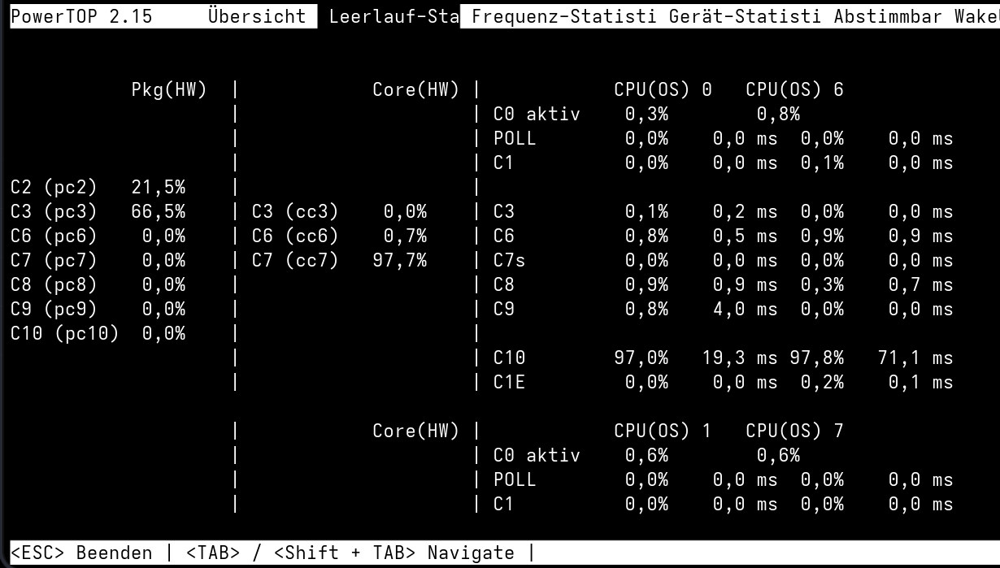
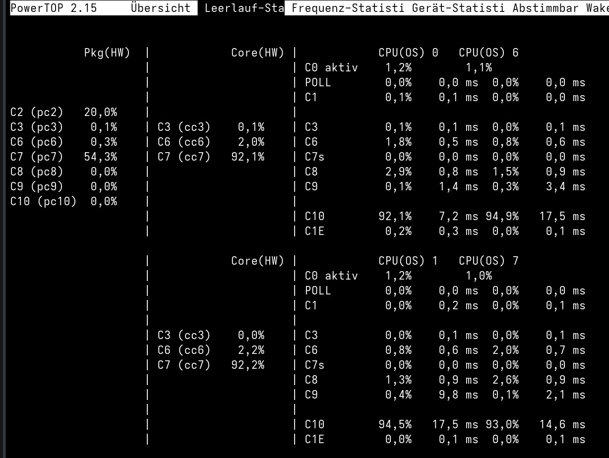

Three watts and a dead USB port
Runtime-suspending Thunderbolt saved real power on the MacBookPro15,1, until USB 3 hotplug stopped working and the apparently obvious patch fell apart.
The MacBookPro15,1 has two Titan Ridge Thunderbolt controllers. Keeping both awake costs roughly three watts. On a battery-powered laptop that is not a rounding error, so getting them into runtime suspend looked like one of the largest remaining wins.
And for a moment it was.
Both controllers suspended, the machine reached package C7, external displays still worked and idle power dropped. And then @ants reported external mass storage was no longer mounting, while other USB periphery was still warking. Another SATA-to-USB adapter worked only through one particular hub. USB 2 was fine. USB 3 UAS was not.
The first half of the result looked exactly like what we wanted:
0000:06:00.0 auto suspended D3hot
0000:7c:00.0 auto suspended D3hot
The missing mass storage was not obvious. How could it be? We forgot to test it.

The tempting wrong answer#
The first patch kept the Titan Ridge USB controllers in D0. That restored hotplug and made the immediate problem disappear. It also threw away a large part of the power saving we had just found.
Worse, two nominally identical 15,1 machines initially behaved differently. Mine looked healthy, @ants' looked broken. That sent us toward a race condition in the driver until we realised our test environments were not actually equal. One module was available much earlier during boot than the other. Because one of us forced it in initrd. Guess who?
That is exactly how a workaround grows into a bad upstream quirk: test two different setups, mistake the difference for hardware behaviour, then freeze the accident into the kernel.
We withdrew the xHCI patch. Although I believe timing in-tree could work well. This is for another day though.
The withdrawn submission remains in Patchwork. Keeping failed approaches visible matters because the next person will otherwise rediscover the same attractive workaround.
Native PCIe services changed the picture#
Letting Linux manage the PCIe port services with pcie_ports=native restored
USB 3 hotplug without forcing the controllers to stay in D0. It also made the
PCIe tree behave much more consistent during runtime power management.
But say goodbye to pkg pc7. We only reach it when Thunderbolt is dead it seems.

Sometimes it is better withdrawing a patch before other people have to live with it just because you had a keyhole perspective.
The related Thunderbolt device-link work is still moving upstream separately,
with @byte carrying the current revision through review. It can be followed in
Patchwork.